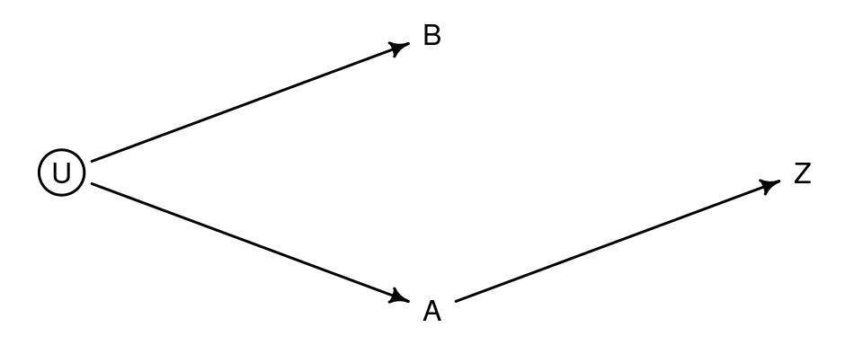
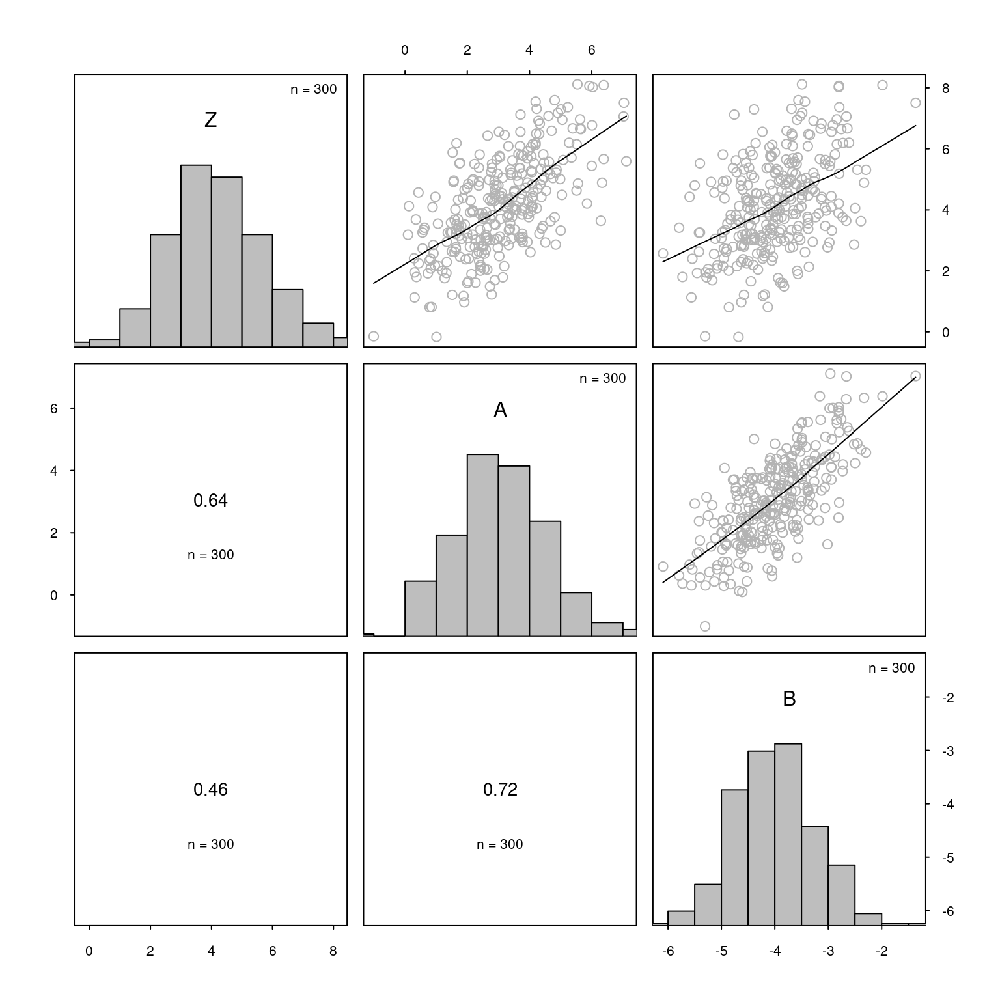
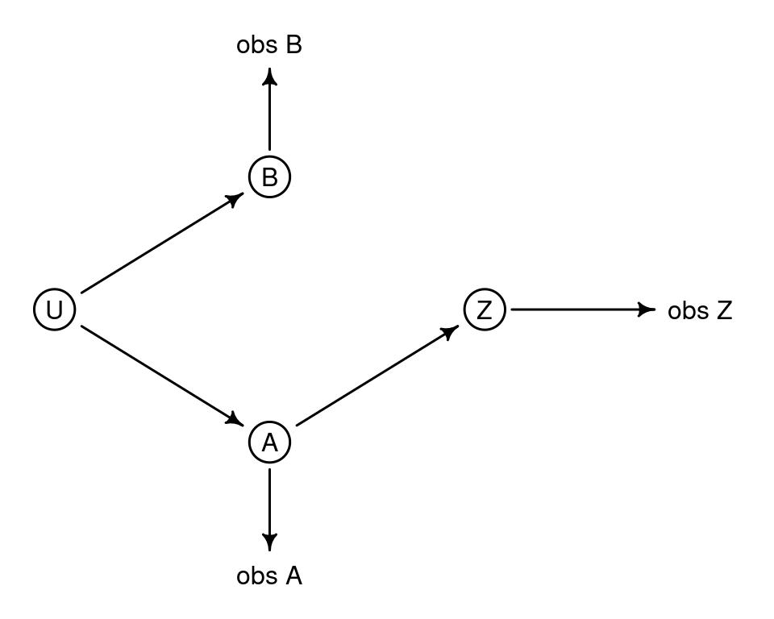
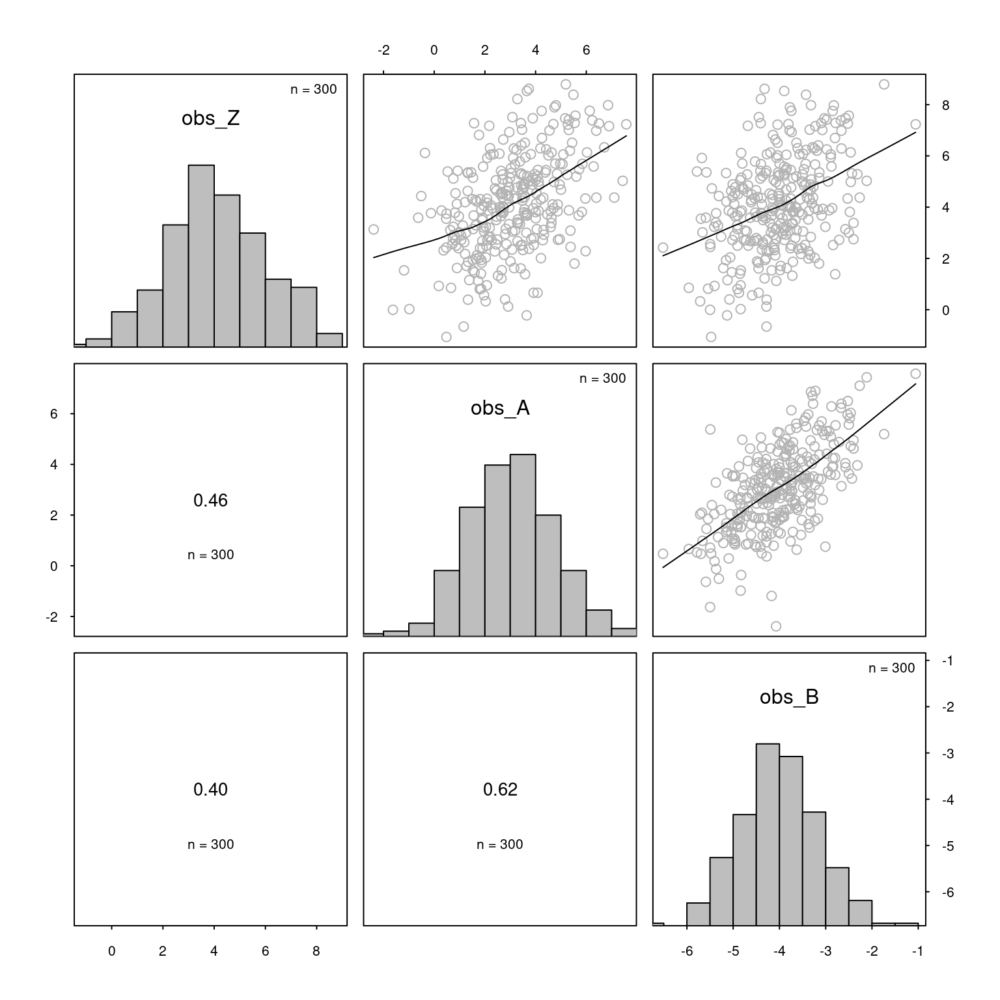
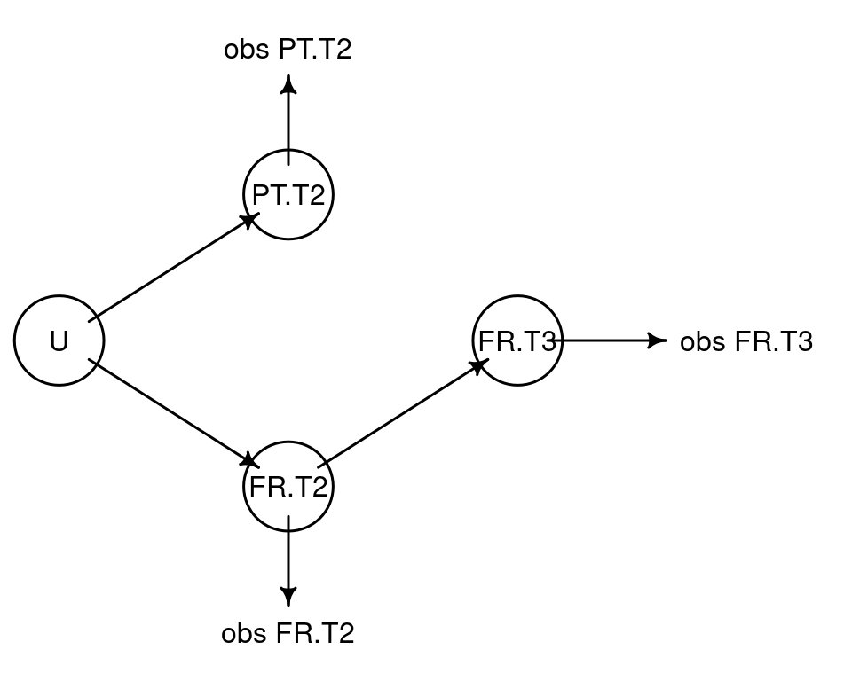

library(cmdstanr) # for fitting Bayesian models, v. 2.32.2
library(posterior) # for working with posterior distributions
# For drawing scatterplot matrices
source("https://janhove.github.io/RCode/scatterplot_matrix.R")
# Set random seed for reproducibility
set.seed(2020-02-13, kind = "Mersenne-Twister")Baby steps in Bayes: Incorporating reliability estimates in regression models
R
Stan
Bayesian statistics
measurement error
correlational studies
reliability
Researchers sometimes calculate reliability indices such as Cronbach’s \(\alpha\) or Revelle’s \(\omega_T\), but their statistical models rarely take these reliability indices into account. Here I want to show you how you can incorporate information about the reliability about your measurements in a statistical model so as to obtain more honest and more readily interpretable parameter estimates.
Reliability and measurement error
This blog post is the sequel to the previous one, where I demonstrated how imperfectly measured control variables undercorrect for the actual confounding in observational studies (also see Berthele & Vanhove 2017; Brunner & Austin 2009; Westfall & Yarkoni 2016). A model that doesn’t account for measurement error on the confounding variable—and hence implicitly assumes that the confound was measured perfectly—may confidently conclude that the variable of actual interest is related to the outcome even when taking into account the confound. From such a finding, researchers typically infer that the variable of actual interest is causally related to the outcome even in absence of the confound. But once this measurement error is duly accounted for, you may find that the evidence for a causal link between the variable of interest and the outcome is more tenuous than originally believed.
So especially in observational studies, where confounds abound, it behooves researchers to account for the measurement error in their variables so that they don’t draw unwarranted conclusions from their data too often. The amount of measurement error on your variables is usually unknown. But if you’ve calculated some reliability estimate such as Cronbach’s \(\alpha\) for your variables, you can use this to obtain an estimate of the amount of measurement error.
To elaborate, in classical test theory, the reliability \(\rho_{XX'}\) of a measure is equal to the ratio of the variance of the (error-free) true scores to the variance of the observed scores. The latter is the sum of the variance of the true scores and the error variance:
\[ \rho_{XX'} = \frac{\textrm{true score variance}}{\textrm{true score variance} + \textrm{measurement error variance}} = \frac{\sigma^2_T}{\sigma^2_T + \sigma^2_E}. \]
Rearranging, we get
\[ \sigma^2_E = \sigma^2_T\left(\frac{1}{\rho_{XX'}}-1\right). \]
None of these values are known, but they can be estimated based on the sample. Specifically, \(\rho_{XX'}\) can be estimated by a reliability index such as Cronbach’s \(\alpha\) and the sum \(\sigma^2_T + \sigma^2_E\) can be estimated by computing the variable’s sample variance.
A simulated example
Let’s first deal with a simulated dataset. The main advantage of analysing simulated data is that you check that what comes out of the model corresponds to what went into the data. In preparing this blog post, I was able to detect an arithmetic error in my model code in this way as one parameter was consistently underestimated. Had I applied the model immediately to the real data set, I wouldn’t have noticed anything wrong. But we’ll deal with real data afterwards.
Update (2023-08-06): When converting this blog from Jekyll/Bootstrap to Quarto, I noticed that the original code used in this blog post, which involved the R package rstan has started to run very slowly. In the present version, I use cmdstanr instead.
Run these commands to follow along:
Generating the construct scores
The scenario we’re going to simulate is one in which you have two correlated predictor variables (A and B) and one outcome variable (Z). Unbeknownst to the analyst, Z is causally affected by A but not by B. Moreover, the three variables are measured with some degree of error, but we’ll come to that later. Figure 1 depicts the scenario for which we’re going to simulate data.

A and B. Even though only A causally affects Z, an association between B and Z will be found unless A is controlled for.The first thing we need are two correlated predictor variables. I’m going to generate these from a bivariate normal distribution. A has a mean of 3 units and a standard deviation of 1.5 units, and B has mean -4 and standard deviation 0.8 units. The correlation between them is \(\rho = 0.73\). To generate a sample from this bivariate normal distribution, you need to construct the variance-covariance matrix from the standard deviations and correlation, which I do in the code below:
# Generate correlated constructs
n <- 300
rho <- 0.73
mean_A <- 3
mean_B <- -4
sd_A <- 1.5
sd_B <- 0.8
# Given the correlation and the standard deviations,
# construct the variance-covariance matrix for the constructs like so:
latent_covariance_matrix <- rbind(c(sd_A, 0), c(0, sd_B)) %*%
rbind(c(1, rho), c(rho, 1)) %*%
rbind(c(sd_A, 0), c(0, sd_B))
# Draw data from the multivariate normal distribution:
constructs <- MASS::mvrnorm(n = n, mu = c(mean_A, mean_B),
Sigma = latent_covariance_matrix)
# Extract variables from object
A <- constructs[, 1]
B <- constructs[, 2]Next, we need to generate the outcome. In this simulation, Z depends linearly on A but not on B (hence ‘\(0 \times B_i\)’).
\[ Z_i = 2 + 0.7 \times A_i + 0 \times B_i + \varepsilon_i. \]
The error term \(\varepsilon\) is drawn from a normal distribution with standard deviation 1.3. Importantly, this error term does not express the measurement error on Z; it is the part of the true score variance in Z that isn’t related to either A or B:
\[ \varepsilon_i \sim \textrm{Normal}(0, 1.3). \]
# Create Z
intercept <- 2
slope_A <- 0.7
slope_B <- 0
sigma_Z.AB <- 1.3
Z <- intercept + slope_A*A + slope_B*B + rnorm(n, sd = sigma_Z.AB)Even though B isn’t causally related to Z, we find that B and Z are correlated thanks to B’s correlation to A.
scatterplot_matrix(cbind(Z, A, B))
B is causally unrelated to Z, but these two variables are still correlated because B correlates with A and A and Z are causally related.A multiple regression model is able to tease apart the effects of A and B on Z:
summary(lm(Z ~ A + B))$coefficients Estimate Std. Error t value Pr(>|t|)
(Intercept) 2.1224 0.7130 2.977 3.15e-03
A 0.6876 0.0706 9.742 1.22e-19
B 0.0196 0.1340 0.146 8.84e-01The confound A is significantly related to Z and its estimated regression parameter is close to its true value of 0.70 (\(\widehat{\beta}_A = 0.69 \pm 0.07\)). The variable of interest B, by contrast, isn’t significantly related to Z when A has been accounted for (\(\widehat{\beta}_B = 0.02 \pm 0.13\)). This is all as it should be.
Adding measurement error
Now let’s add measurement error to all variables. The A values that we actually observe will then be distorted versions of the true A values:
\[ \textrm{observed } A_i = \textrm{true } A_i + \varepsilon_{Ai}. \]
The ‘noise’ \(\varepsilon_{A}\) is commonly assumed to be normally distributed:
\[ \varepsilon_{Ai} \sim \textrm{Normal}(0, \tau_A). \]
That said, you can easily imagine situations where the noise likely has a different distribution. For instance, when measurements are measured to the nearest integer (e.g., body weights in kilograms), the noise is likely uniformly distributed (e.g., a reported body weight of 66 kg means that the true body weight lies between 65.5 and 66.5 kg).
To make the link with the analysis more transparant, I will express the amount of noise in terms of the variables’ reliabilities. For the confound A, I set the reliability at 0.70. Since A’s standard deviation was 1.5 units, this means that the standard deviation of the noise is \(\sqrt{1.5^2\left(\frac{1}{0.70} - 1\right)} = 0.98\) units. I set the reliability for B, the variable of actual interest at 0.90. Its standard deviation is 0.8, so the standard deviation of the noise is \(\sqrt{0.8^2\left(\frac{1}{0.90} - 1\right)} = 0.27\) units.
# Add measurement error on A and B
obs_A <- A + rnorm(n = n, sd = sqrt(sd_A^2*(1/0.70 - 1))) # reliability 0.70
obs_B <- B + rnorm(n = n, sd = sqrt(sd_B^2*(1/0.90 - 1))) # reliability 0.90The same logic applies to adding measurement noise to Z. The difficulty here lies in obtaining the population standard deviation (or variance) of Z. I don’t want to just plug in Z’s sample standard deviation since I want to have exact knowledge of the population parameters. While we specified a sigma_Z.AB above, this is not the total population standard deviation of Z: it’s the population standard deviation of Z once Z has been controlled for A and B. To obtain the total standard deviation of Z (here admittedly confusingly labelled \(\sigma_Z\)), we need to add in the variance in Z due to A and B:
\[ \sigma_Z = \sqrt{(\beta_A\sigma_A)^2 + (\beta_B\sigma_B)^2 + 2\beta_A\beta_B\sigma_A\sigma_B\rho_{AB} + \sigma_{Z.AB}^2}. \]
Since \(\beta_B = 0\), this simplifies to \(\sigma_Z = \sqrt{(\beta_A\sigma_A)^2 + \sigma_{Z.AB}^2}\), but if you want to simulate your own datasets, the full formula may be useful.
The population standard deviation of Z is thus \(\sqrt{(0.7 \times 1.5)^2 + 1.3^2} = 1.67\). Setting Z’s reliability to 0.70, we find that the standard deviation of the noise is \(\sqrt{1.67^2\left(\frac{1}{0.70} - 1\right)} = 1.09\).
# Measurement error on Z
sd_Z <- sqrt((slope_A*sd_A)^2 + (0*slope_B)^2 + 2*(slope_A * slope_B * latent_covariance_matrix[1,2]) + sigma_Z.AB^2)
obs_Z <- Z + rnorm(n = n, sd = sqrt(sd_Z^2*(1/0.70 - 1))) # reliability 0.70Figure 3 shows the causal diagram for the actually observed simulated data.

A, B and Z are now unobserved (latent) variables, but so-called ‘descendants’ of them were measured. These reflect their latent constructs imperfectly. Crucially, controlling for obs_A will not entirely control for the confound: the path between obs_B and obs_Z stays open.As Figure 4 shows, the observed variables are all correlated with each other.
scatterplot_matrix(cbind(obs_Z, obs_A, obs_B))
Crucially, controlling for obs_A in a regression model doesn’t entirely eradicate the confound and we find that obs_B is significantly related to obs_Z even after controlling for obs_A (\(\widehat{\beta}_{B_{\textrm{obs}}} = 0.40 \pm 0.15\)). Moreover, the regression model on the observed variables underestimates the strength of the relationship between the true construct scores (\(\widehat{\beta}_{A_{\textrm{obs}}} = 0.40 \pm 0.07\), whereas \(\beta_A = 0.7\)).
summary(lm(obs_Z ~ obs_A + obs_B))$coefficients Estimate Std. Error t value Pr(>|t|)
(Intercept) 4.498 0.7588 5.93 8.49e-09
obs_A 0.402 0.0737 5.45 1.05e-07
obs_B 0.404 0.1470 2.75 6.41e-03Statistical model
The statistical model, written below in Stan code, corresponds to the data generating mechanism above and tries to infer its parameters from the observed data and some prior information.
The data block specifies the input that the model should handle. I think this is self-explanatory. Note that the latent variable scores A, B and Z aren’t part of the input as we wouldn’t have directly observed these.
The parameters block first defines the parameters needed for the regression model with the unobserved latent variables (the one we used to generate Z). It then defines the parameters needed to generate the true variables scores for A and B as well as the parameters needed to generate the observed scores from the true scores (viz., the true scores themselves and the reliabilities). Note that it is crucial to allow the model to estimate a correlation between A and B, otherwise it won’t ‘know’ that A confounds the B-Z relationship.
The transformed parameters block contains, well, transformations of these parameters. For instance, the standard deviations of A and B and the correlation between A and B are used to generate a variance-covariance matrix. Moreover, the standard deviations of the measurement noise are computed using the latent variables’ standard deviation and their reliabilities.
The model block, finally, specifies how we think the observed data and the (transformed or untransformed) parameters fit together and what plausible a priori values for the (transformed or untransformed) parameters are. These prior distributions are pretty abstract in this example: we generated context-free data ourselves, so it’s not clear what motivates these priors. The real example to follow will hopefully make more sense in this respect. You’ll notice that I’ve also specified a prior for the reliabilities. The reason is that you typically don’t know the reliability of an observed variable with perfect precision but that you have sample estimate with some inherent uncertainty. The priors reflect this uncertainty. Again, this will become clearer in the real example to follow.
meas_error_code <- '
data {
// Number of observations
int<lower = 1> N;
// Observed outcome
vector[N] obs_Z;
// Observed predictors
vector[N] obs_A;
vector[N] obs_B;
}
parameters {
// Parameters for regression
real intercept;
real slope_A;
real slope_B;
real<lower = 0> sigma;
// Latent predictors (= constructs):
// standard deviations and means
real<lower = 0> sigma_lat_A;
real<lower = 0> sigma_lat_B;
row_vector[2] latent_means;
// Correlation between latent predictors
real<lower = -1, upper = 1> latent_rho;
// Latent variables (true scores)
matrix[N, 2] latent_predictors;
vector[N] lat_Z; // latent outcome
// Unknown but estimated reliabilities
real<lower = 0, upper = 1> reliability_A;
real<lower = 0, upper = 1> reliability_B;
real<lower = 0, upper = 1> reliability_Z;
}
transformed parameters {
vector[N] mu_Z; // conditional mean of outcome
vector[N] lat_A; // latent variables, separated out
vector[N] lat_B;
real error_A; // standard error of measurement
real error_B;
real error_Z;
// standard deviations of latent predictors, in matrix form
matrix[2, 2] sigma_lat;
// correlation and covariance matrix for latent predictors
cov_matrix[2] latent_cor;
cov_matrix[2] latent_cov;
// standard deviation of latent outcome
real<lower = 0> sigma_lat_Z;
sigma_lat_Z = sd(lat_Z);
// Express measurement error in terms of
// standard deviation of constructs and reliability
error_A = sqrt(sigma_lat_A^2*(1/reliability_A - 1));
error_B = sqrt(sigma_lat_B^2*(1/reliability_B - 1));
error_Z = sqrt(sigma_lat_Z^2*(1/reliability_Z - 1));
// Define diagonal matrix with standard errors of latent variables
sigma_lat[1, 1] = sigma_lat_A;
sigma_lat[2, 2] = sigma_lat_B;
sigma_lat[1, 2] = 0;
sigma_lat[2, 1] = 0;
// Define correlation matrix for latent variables
latent_cor[1, 1] = 1;
latent_cor[2, 2] = 1;
latent_cor[1, 2] = latent_rho;
latent_cor[2, 1] = latent_rho;
// Compute covariance matrix for latent variables
latent_cov = sigma_lat * latent_cor * sigma_lat;
// Extract latent variables from matrix
lat_A = latent_predictors[, 1];
lat_B = latent_predictors[, 2];
// Regression model for conditional mean of Z
mu_Z = intercept + slope_A*lat_A + slope_B*lat_B;
}
model {
// Priors for regression parameters
intercept ~ normal(0, 2);
slope_A ~ normal(0, 2);
slope_B ~ normal(0, 2);
sigma ~ normal(0, 2);
// Prior for latent standard deviations
sigma_lat_A ~ normal(0, 2);
sigma_lat_B ~ normal(0, 2);
// Prior for latent means
latent_means ~ normal(0, 3);
// Prior expectation for correlation between latent variables.
// Tend towards positive correlation, but pretty vague.
latent_rho ~ normal(0.4, 0.3);
// Prior for reliabilities.
// These are estimated with some uncertainty, i.e.,
// they are not point values but distributions.
reliability_A ~ beta(70, 30);
reliability_B ~ beta(90, 10);
reliability_Z ~ beta(70, 30);
// Distribution of latent variable
for (i in 1:N) {
latent_predictors[i, ] ~ multi_normal(latent_means, latent_cov);
}
// Generate latent outcome
lat_Z ~ normal(mu_Z, sigma);
// Add noise to latent variables
obs_A ~ normal(lat_A, error_A);
obs_B ~ normal(lat_B, error_B);
obs_Z ~ normal(lat_Z, error_Z);
}
'Put the data in a list and fit the model:
data_list <- list(
obs_Z = obs_Z,
obs_A = obs_A,
obs_B = obs_B,
N = n
)meas_error_model <- cmdstan_model(write_stan_file(meas_error_code))
model_fit <- meas_error_model$sample(
data = data_list
, seed = 123
, chains = 4
, parallel_chains = 4
, iter_warmup = 1000
, iter_sampling = 1000
, refresh = 500
, max_treedepth = 15
, adapt_delta = 0.99
)Running MCMC with 4 parallel chains...
Chain 1 Iteration: 1 / 2000 [ 0%] (Warmup)
Chain 2 Iteration: 1 / 2000 [ 0%] (Warmup)
Chain 3 Iteration: 1 / 2000 [ 0%] (Warmup)
Chain 4 Iteration: 1 / 2000 [ 0%] (Warmup)
Chain 4 Iteration: 500 / 2000 [ 25%] (Warmup)
Chain 3 Iteration: 500 / 2000 [ 25%] (Warmup)
Chain 1 Iteration: 500 / 2000 [ 25%] (Warmup)
Chain 2 Iteration: 500 / 2000 [ 25%] (Warmup)
Chain 4 Iteration: 1000 / 2000 [ 50%] (Warmup)
Chain 4 Iteration: 1001 / 2000 [ 50%] (Sampling)
Chain 3 Iteration: 1000 / 2000 [ 50%] (Warmup)
Chain 3 Iteration: 1001 / 2000 [ 50%] (Sampling)
Chain 2 Iteration: 1000 / 2000 [ 50%] (Warmup)
Chain 2 Iteration: 1001 / 2000 [ 50%] (Sampling)
Chain 1 Iteration: 1000 / 2000 [ 50%] (Warmup)
Chain 1 Iteration: 1001 / 2000 [ 50%] (Sampling)
Chain 2 Iteration: 1500 / 2000 [ 75%] (Sampling)
Chain 4 Iteration: 1500 / 2000 [ 75%] (Sampling)
Chain 3 Iteration: 1500 / 2000 [ 75%] (Sampling)
Chain 2 Iteration: 2000 / 2000 [100%] (Sampling)
Chain 2 finished in 279.7 seconds.
Chain 1 Iteration: 1500 / 2000 [ 75%] (Sampling)
Chain 4 Iteration: 2000 / 2000 [100%] (Sampling)
Chain 4 finished in 320.0 seconds.
Chain 3 Iteration: 2000 / 2000 [100%] (Sampling)
Chain 3 finished in 355.9 seconds.
Chain 1 Iteration: 2000 / 2000 [100%] (Sampling)
Chain 1 finished in 369.9 seconds.
All 4 chains finished successfully.
Mean chain execution time: 331.4 seconds.
Total execution time: 370.0 seconds.Results
model_fit$summary(
variables = c("intercept", "slope_A", "slope_B", "sigma"
,"sigma_lat_A", "sigma_lat_B", "sigma_lat_Z"
,"latent_means", "latent_rho"
, "reliability_A", "reliability_B", "reliability_Z"
,"error_A", "error_B", "error_Z")
, "mean", "sd"
, extra_quantiles = ~posterior::quantile2(., probs = c(0.025, 0.975))
, "rhat"
)# A tibble: 16 × 6
variable mean sd q2.5 q97.5 rhat
<chr> <num> <num> <num> <num> <num>
1 intercept 0.649 1.49 -2.43 3.37 1.02
2 slope_A 0.866 0.170 0.564 1.22 1.02
3 slope_B -0.200 0.254 -0.719 0.265 1.02
4 sigma 1.17 0.126 0.903 1.40 1.01
5 sigma_lat_A 1.40 0.0716 1.26 1.54 1.00
6 sigma_lat_B 0.797 0.0353 0.731 0.869 1.00
7 sigma_lat_Z 1.59 0.0702 1.45 1.72 1.01
8 latent_means[1] 3.07 0.0972 2.87 3.26 1.00
9 latent_means[2] -4.02 0.0486 -4.11 -3.92 1.00
10 latent_rho 0.780 0.0493 0.678 0.871 1.01
11 reliability_A 0.694 0.0408 0.616 0.773 1.02
12 reliability_B 0.901 0.0277 0.843 0.947 1.00
13 reliability_Z 0.699 0.0466 0.600 0.782 1.01
14 error_A 0.925 0.0710 0.785 1.06 1.01
15 error_B 0.262 0.0382 0.191 0.338 1.01
16 error_Z 1.04 0.0872 0.880 1.22 1.01The model recovers the true parameter values pretty well (Table 1) and, on the basis of this model, you wouldn’t erroneously conclude that B is causally related to Z (see the parameter estimate for slope_B).
| Parameter | True value | Estimate |
|---|---|---|
| intercept | 2.00 | 0.65 ± 1.53 |
| slope_A | 0.70 | 0.87 ± 0.17 |
| slope_B | 0.00 | -0.20 ± 0.25 |
| sigma_Z.AB | 1.30 | 1.17 ± 0.13 |
| sd_A | 1.50 | 1.40 ± 0.07 |
| sd_B | 0.80 | 0.80 ± 0.04 |
| mean_A | 3.00 | 3.07 ± 0.10 |
| mean_B | -4.00 | -4.02 ± 0.05 |
| rho | 0.73 | 0.78 ± 0.05 |
| reliability_A | 0.70 | 0.69 ± 0.04 |
| reliability_B | 0.90 | 0.90 ± 0.03 |
| reliability_Z | 0.70 | 0.70 ± 0.05 |
| *sd_Z | 1.67 | 1.59 ± 0.07 |
| *error_A | 0.98 | 0.93 ± 0.07 |
| *error_B | 0.27 | 0.26 ± 0.04 |
| *error_Z | 1.09 | 1.04 ± 0.09 |
In the previous blog post, I’ve shown that such a model also estimates the latent true variable scores and that these estimates correspond more closely to the actual true variable scores than do the observed variable scores. I’ll skip this step here.
Real-life example: Interdependence
Satisfied that our model can recover the actual parameter values in scenarios such as those depicted in Figure 3, we now turn to a real-life example of such a situation. The example was already described in the previous blog post; here I’ll just draw the causal model that assumes that reflects the null hypothesis that a child’s Portuguese skills at T2 (PT.T2) don’t contribute to their French skills at T3 (FR.T3), but that due to common factors such as intelligence, form on the day etc. (\(U\)), French skills and Portuguese skills at T2 are correlated across children. What is observed are test scores, not the children’s actual skills.

Data
The command below is pig-ugly, but allows you to easily read in the data.
skills <- structure(list(
Subject = c("A_PLF_1","A_PLF_10","A_PLF_12","A_PLF_13","A_PLF_14","A_PLF_15","A_PLF_16","A_PLF_17","A_PLF_19","A_PLF_2","A_PLF_3","A_PLF_4","A_PLF_5","A_PLF_7","A_PLF_8","A_PLF_9","AA_PLF_11","AA_PLF_12","AA_PLF_13","AA_PLF_6","AA_PLF_7","AA_PLF_8","AD_PLF_10","AD_PLF_11","AD_PLF_13","AD_PLF_14","AD_PLF_15","AD_PLF_16","AD_PLF_17","AD_PLF_18","AD_PLF_19","AD_PLF_2","AD_PLF_20","AD_PLF_21","AD_PLF_22","AD_PLF_24","AD_PLF_25","AD_PLF_26","AD_PLF_4","AD_PLF_6","AD_PLF_8","AD_PLF_9","AE_PLF_1","AE_PLF_2","AE_PLF_4","AE_PLF_5","AE_PLF_6","C_PLF_1","C_PLF_16","C_PLF_19","C_PLF_30","D_PLF_1","D_PLF_2","D_PLF_3","D_PLF_4","D_PLF_5","D_PLF_6","D_PLF_7","D_PLF_8","Y_PNF_12","Y_PNF_15","Y_PNF_16","Y_PNF_17","Y_PNF_18","Y_PNF_2","Y_PNF_20","Y_PNF_24","Y_PNF_25","Y_PNF_26","Y_PNF_27","Y_PNF_28","Y_PNF_29","Y_PNF_3","Y_PNF_31","Y_PNF_32","Y_PNF_33","Y_PNF_34","Y_PNF_36","Y_PNF_4","Y_PNF_5","Y_PNF_6","Y_PNF_7","Y_PNF_8","Y_PNF_9","Z_PLF_2","Z_PLF_3","Z_PLF_4","Z_PLF_5","Z_PLF_6","Z_PLF_7","Z_PLF_8")
, FR_T2 = c(0.6842105263,0.4736842105,1,0.4210526316,0.6842105263,0.6842105263,0.8947368421,0.5789473684,0.7368421053,0.7894736842,0.4210526316,0.5263157895,0.3157894737,0.5263157895,0.6842105263,0.8421052632,0.3684210526,0.8421052632,0.7894736842,0.7894736842,0.6842105263,0.6315789474,0.6315789474,0.3684210526,0.4736842105,0.2631578947,0.4736842105,0.9473684211,0.3157894737,0.5789473684,0.2631578947,0.5263157895,0.5263157895,0.7368421053,0.6315789474,0.8947368421,0.6315789474,0.9473684211,0.7368421053,0.6315789474,0.7894736842,0.7894736842,0.4736842105,0.4736842105,0.9473684211,0.7894736842,0.3157894737,0.9473684211,1,0.7368421053,0.5789473684,0.8421052632,0.8421052632,0.7368421053,0.5789473684,0.6842105263,0.4736842105,0.4210526316,0.6842105263,0.8947368421,0.6842105263,0.7368421053,0.5263157895,0.5789473684,0.8947368421,0.7894736842,0.5263157895,0.6315789474,0.3157894737,0.7368421053,0.5789473684,0.6842105263,0.7368421053,0.5789473684,0.7894736842,0.6842105263,0.6315789474,0.6842105263,0.5789473684,0.7894736842,0.5789473684,0.7368421053,0.4736842105,0.8947368421,0.8421052632,0.7894736842,0.6315789474,0.6842105263,0.8947368421,0.6842105263,0.9473684211)
, PT_T2 = c(0.7368421053,0.5789473684,0.9473684211,0.5263157895,0.6315789474,0.5789473684,0.9473684211,0.4736842105,0.8421052632,0.5263157895,0.2631578947,0.6842105263,0.3684210526,0.3684210526,0.4736842105,0.8947368421,0.4210526316,0.5263157895,0.8947368421,0.8421052632,0.8947368421,0.8947368421,0.6315789474,0.3684210526,0.0526315789,0.3684210526,0.4210526316,0.9473684211,0.3157894737,0.4736842105,0.3157894737,0.5789473684,0.4736842105,0.7894736842,0.5263157895,0.8947368421,0.6315789474,0.7894736842,0.7368421053,0.5789473684,0.6842105263,0.7368421053,0.3684210526,0.7894736842,0.7368421053,0.4736842105,0.5263157895,1,0.8947368421,0.8947368421,0.4736842105,0.8421052632,1,0.6315789474,0.5263157895,0.5789473684,0.5789473684,0.5789473684,0.5263157895,0.9473684211,0.5263157895,0.6315789474,0.5789473684,0.6315789474,0.9473684211,0.7894736842,0.8421052632,0.5263157895,0.7894736842,0.4736842105,0.6842105263,0.3684210526,0.7894736842,0.7368421053,0.6315789474,0.9473684211,0.4210526316,0.5789473684,0.3684210526,0.8947368421,0.6315789474,0.8421052632,0.5789473684,0.5263157895,0.9473684211,0.8947368421,0.7368421053,0.4736842105,0.8421052632,0.7894736842,0.9473684211)
, FR_T3 = c(0.9473684211,0.3157894737,0.9473684211,0.5789473684,0.5789473684,0.6842105263,0.8421052632,0.6842105263,0.7368421053,0.8421052632,0.4210526316,0.5789473684,0.4736842105,0.6842105263,0.5789473684,0.7894736842,0.7368421053,0.7894736842,1,0.8421052632,0.8947368421,0.4210526316,0.8947368421,0.4736842105,0.5263157895,0.4736842105,0.5789473684,1,0.7368421053,0.8421052632,0.2631578947,0.7894736842,0.6842105263,0.8947368421,0.5263157895,0.8947368421,0.6842105263,0.9473684211,0.9473684211,0.5263157895,0.9473684211,0.8421052632,0.4736842105,0.8947368421,0.9473684211,0.7368421053,0.5263157895,0.8421052632,0.9473684211,0.7894736842,0.8947368421,0.8421052632,0.8421052632,0.8947368421,0.5789473684,0.7368421053,0.6842105263,0.4736842105,0.6842105263,0.8947368421,0.4736842105,0.8421052632,0.7894736842,0.5789473684,0.7368421053,0.7894736842,0.8947368421,0.6842105263,0.6842105263,0.9473684211,0.7894736842,0.5263157895,0.7368421053,0.6842105263,0.8421052632,0.7368421053,0.7368421053,0.5789473684,0.4736842105,0.8947368421,0.4210526316,0.8947368421,0.6842105263,1,0.8421052632,0.8421052632,0.6315789474,0.6315789474,0.8947368421,0.6315789474,0.9473684211)
, PT_T3 = c(0.8421052632,0.3684210526,0.9473684211,0.3157894737,0.5789473684,0.7894736842,1,0.5263157895,0.8421052632,0.7894736842,0.3157894737,0.6315789474,0.4210526316,0.5263157895,0.6842105263,0.8421052632,0.8947368421,0.6842105263,0.9473684211,0.8947368421,0.9473684211,0.8421052632,0.8421052632,0.5263157895,0.6842105263,0.5263157895,0.8421052632,0.9473684211,0.4210526316,0.7894736842,0.7894736842,0.8421052632,0.7368421053,1,0.6842105263,1,0.7894736842,0.8421052632,0.9473684211,0.6842105263,0.7894736842,0.7894736842,0.3157894737,0.7894736842,NA,0.6315789474,0.6842105263,0.9473684211,1,0.9473684211,0.7368421053,0.8947368421,0.8421052632,0.8421052632,0.5789473684,0.6315789474,0.6315789474,0.8421052632,0.7894736842,0.8421052632,0.5789473684,0.8421052632,0.7368421053,0.6842105263,0.8421052632,0.8421052632,0.9473684211,0.4736842105,0.8421052632,0.7894736842,0.7368421053,0.2105263158,0.7894736842,0.7894736842,0.7368421053,0.6315789474,0.6315789474,0.4210526316,0.6315789474,0.8421052632,0.6842105263,0.9473684211,0.5789473684,0.5263157895,0.7894736842,0.7894736842,0.7894736842,0.6842105263,0.8421052632,0.8421052632,0.8947368421)
)
, row.names = c(NA, -91L)
, class = c("tbl_df","tbl","data.frame")
)Statistical model
The only thing that’s changed in the statistical model compared to the example with the simulated data is that I’ve renamed the parameters and that the prior distributions are better motivated. Let’s consider each prior distribution in turn:
intercept ~ normal(0.2, 0.1);: The intercept is the average true French skill score at T3 for children whose true French and Portuguese skill scores at T2 are 0. This is the lowest possible score (the theoretical range of the data is [0, 1]), so we’d expect such children to perform poorly at T3, too. Anormal(0.2, 0.1)distribution puts 95% probability on such children having a true French score at T3 between 0 and 0.4.slope_FR ~ normal(0.5, 0.25);: This parameter expresses the difference between the average true French skill score at T3 for children with a true French skill score of 1 at T2 (the theoretical maximum) vs. those with a true French skill score of 0 at T2 (the theoretical minimum). This is obviously some value between -1 and 1, and presumably it’s going to be positive. Anormal(0.5, 0.25)puts 95% probability on this difference lying between 0 and 1, which I think is reasonable.slope_PT ~ normal(0, 0.25);: The slope for Portuguese is bound to be smaller than the one for French. Moreover, it’s not a given that it will be appreciably different from zero. Hence a prior centred on 0 that still gives the data a chance to pull the estimate in either direction.sigma ~ normal(0.15, 0.08);: If neither of the T2 variables predicts T3, uncertainty is highest when the mean T3 score is 0.5. Since these scores are bounded between 0 and 1, the standard deviation could not be much higher than 0.20. But French T2 is bound to be a predictor, so let us choose a slightly lower value (0.15).latent_means ~ normal(0.5, 0.1);: These are the prior expectations for the true score means of the T2 variables. 0.5 lies in the middle of the scale; thenormal(0.5, 0.1)prior puts 95% probability on these means to lie between 0.3 and 0.7.sigma_lat_FR_T2 ~ normal(0, 0.25);,sigma_lat_FR_T2 ~ normal(0, 0.25);: The standard deviations of the latent T2 variables. If these truncated normal distributions put a 95% probability of the latent standard deviations to be lower than 0.50.latent_rho ~ normal(0.4, 0.3);: The a priori expected correlation between the latent variablesAandB. These are bound to be positively correlated.reliability_FR_T2 ~ beta(100, 100*0.27/0.73);The prior distribution for the reliability of the French T2 variable. Cronbach’s \(\alpha\) for this variable was 0.73 (95% CI: [0.65, 0.78]). This roughly corresponds to abeta(100, 100*0.27/0.73)distribution:
qbeta(c(0.025, 0.975), 100, 100*0.27/0.73)[1] 0.6529105 0.8007296reliability_PT_T2 ~ beta(120, 120*0.21/0.79);Similarly, Cronbach’s \(\alpha\) for the Portuguese T2 variable was 0.79 (95% CI: [0.72, 0.84]), which roughly corresponds to abeta(120, 120*0.21/0.79)distribution:
qbeta(c(0.025, 0.975), 120, 120*0.21/0.79)[1] 0.7219901 0.8507814reliability_FR_T3 ~ beta(73, 27);: The estimated reliability for the French T3 data was similar to that of the T2 data, so I used the same prior.
interdependence_code <- '
data {
// Number of observations
int<lower = 1> N;
// Observed outcome
vector[N] FR_T3;
// Observed predictors
vector[N] FR_T2;
vector[N] PT_T2;
}
parameters {
// Parameters for regression
real intercept;
real slope_FR;
real slope_PT;
real<lower = 0> sigma;
// standard deviations of latent predictors (= constructs)
real<lower = 0> sigma_lat_FR_T2;
real<lower = 0> sigma_lat_PT_T2;
// Means of latent predictors
row_vector[2] latent_means;
// Unknown correlation between latent predictors
real<lower = -1, upper = 1> latent_rho;
// Latent variables
matrix[N, 2] latent_predictors;
vector[N] lat_FR_T3; // latent outcome
// Unknown but estimated reliabilities
real<lower = 0, upper = 1> reliability_FR_T2;
real<lower = 0, upper = 1> reliability_PT_T2;
real<lower = 0, upper = 1> reliability_FR_T3;
}
transformed parameters {
vector[N] mu_FR_T3; // conditional mean of outcome
vector[N] lat_FR_T2; // latent variables, separated out
vector[N] lat_PT_T2;
real error_FR_T2; // standard error of measurement
real error_PT_T2;
real error_FR_T3;
// standard deviations of latent predictors, in matrix form
matrix[2, 2] sigma_lat;
// correlation and covariance matrix for latent predictors
cov_matrix[2] latent_cor;
cov_matrix[2] latent_cov;
// standard deviation of latent outcome
real<lower = 0> sigma_lat_FR_T3;
sigma_lat_FR_T3 = sd(lat_FR_T3);
// Express measurement error in terms of
// standard deviation of constructs and reliability
error_FR_T2 = sqrt(sigma_lat_FR_T2^2*(1/reliability_FR_T2 - 1));
error_PT_T2 = sqrt(sigma_lat_PT_T2^2*(1/reliability_PT_T2 - 1));
error_FR_T3 = sqrt(sigma_lat_FR_T3^2*(1/reliability_FR_T3 - 1));
// Define diagonal matrix with standard errors of latent variables
sigma_lat[1, 1] = sigma_lat_FR_T2;
sigma_lat[2, 2] = sigma_lat_PT_T2;
sigma_lat[1, 2] = 0;
sigma_lat[2, 1] = 0;
// Define correlation matrix for latent variables
latent_cor[1, 1] = 1;
latent_cor[2, 2] = 1;
latent_cor[1, 2] = latent_rho;
latent_cor[2, 1] = latent_rho;
// Compute covariance matrix for latent variables
latent_cov = sigma_lat * latent_cor * sigma_lat;
// Extract latent variables from matrix
lat_FR_T2 = latent_predictors[, 1];
lat_PT_T2 = latent_predictors[, 2];
// Regression model for conditional mean of Z
mu_FR_T3 = intercept + slope_FR*lat_FR_T2 + slope_PT*lat_PT_T2;
}
model {
// Priors for regression parameters
intercept ~ normal(0.2, 0.1);
slope_FR ~ normal(0.5, 0.25);
slope_PT ~ normal(0, 0.25);
sigma ~ normal(0.15, 0.08);
// Prior for latent means
latent_means ~ normal(0.5, 0.1);
// Prior for latent standard deviations
sigma_lat_FR_T2 ~ normal(0, 0.25);
sigma_lat_PT_T2 ~ normal(0, 0.25);
// Prior expectation for correlation between latent variables.
latent_rho ~ normal(0.4, 0.3);
// Prior for reliabilities.
// These are estimated with some uncertainty, i.e.,
// they are not point values but distributions.
reliability_FR_T2 ~ beta(100, 100*0.27/0.73);
reliability_PT_T2 ~ beta(120, 120*0.21/0.79);
reliability_FR_T3 ~ beta(100, 100*0.27/0.73);
// Distribution of latent variable
for (i in 1:N) {
latent_predictors[i, ] ~ multi_normal(latent_means, latent_cov);
}
// Generate latent outcome
lat_FR_T3 ~ normal(mu_FR_T3, sigma);
// Measurement model
FR_T2 ~ normal(lat_FR_T2, error_FR_T2);
PT_T2 ~ normal(lat_PT_T2, error_PT_T2);
FR_T3 ~ normal(lat_FR_T3, error_FR_T3);
}
' data_list <- list(
FR_T2 = skills$FR_T2,
PT_T2 = skills$PT_T2,
FR_T3 = skills$FR_T3,
N = length(skills$FR_T3)
)
interdependence_model <- cmdstan_model(write_stan_file(interdependence_code))
interdependence_fit <- interdependence_model$sample(
data = data_list
, seed = 42
, chains = 4
, parallel_chains = 4
, iter_warmup = 2000
, iter_sampling = 6000
, refresh = 1000
, max_treedepth = 15
, adapt_delta = 0.9999
)Running MCMC with 4 parallel chains...
Chain 1 Iteration: 1 / 8000 [ 0%] (Warmup)
Chain 2 Iteration: 1 / 8000 [ 0%] (Warmup)
Chain 3 Iteration: 1 / 8000 [ 0%] (Warmup)
Chain 4 Iteration: 1 / 8000 [ 0%] (Warmup)
Chain 1 Iteration: 1000 / 8000 [ 12%] (Warmup)
Chain 4 Iteration: 1000 / 8000 [ 12%] (Warmup)
Chain 2 Iteration: 1000 / 8000 [ 12%] (Warmup)
Chain 3 Iteration: 1000 / 8000 [ 12%] (Warmup)
Chain 1 Iteration: 2000 / 8000 [ 25%] (Warmup)
Chain 1 Iteration: 2001 / 8000 [ 25%] (Sampling)
Chain 4 Iteration: 2000 / 8000 [ 25%] (Warmup)
Chain 4 Iteration: 2001 / 8000 [ 25%] (Sampling)
Chain 2 Iteration: 2000 / 8000 [ 25%] (Warmup)
Chain 2 Iteration: 2001 / 8000 [ 25%] (Sampling)
Chain 3 Iteration: 2000 / 8000 [ 25%] (Warmup)
Chain 3 Iteration: 2001 / 8000 [ 25%] (Sampling)
Chain 1 Iteration: 3000 / 8000 [ 37%] (Sampling)
Chain 4 Iteration: 3000 / 8000 [ 37%] (Sampling)
Chain 1 Iteration: 4000 / 8000 [ 50%] (Sampling)
Chain 4 Iteration: 4000 / 8000 [ 50%] (Sampling)
Chain 2 Iteration: 3000 / 8000 [ 37%] (Sampling)
Chain 1 Iteration: 5000 / 8000 [ 62%] (Sampling)
Chain 4 Iteration: 5000 / 8000 [ 62%] (Sampling)
Chain 4 Iteration: 6000 / 8000 [ 75%] (Sampling)
Chain 1 Iteration: 6000 / 8000 [ 75%] (Sampling)
Chain 2 Iteration: 4000 / 8000 [ 50%] (Sampling)
Chain 3 Iteration: 3000 / 8000 [ 37%] (Sampling)
Chain 4 Iteration: 7000 / 8000 [ 87%] (Sampling)
Chain 1 Iteration: 7000 / 8000 [ 87%] (Sampling)
Chain 4 Iteration: 8000 / 8000 [100%] (Sampling)
Chain 4 finished in 261.0 seconds.
Chain 1 Iteration: 8000 / 8000 [100%] (Sampling)
Chain 1 finished in 271.4 seconds.
Chain 2 Iteration: 5000 / 8000 [ 62%] (Sampling)
Chain 2 Iteration: 6000 / 8000 [ 75%] (Sampling)
Chain 3 Iteration: 4000 / 8000 [ 50%] (Sampling)
Chain 2 Iteration: 7000 / 8000 [ 87%] (Sampling)
Chain 2 Iteration: 8000 / 8000 [100%] (Sampling)
Chain 2 finished in 384.6 seconds.
Chain 3 Iteration: 5000 / 8000 [ 62%] (Sampling)
Chain 3 Iteration: 6000 / 8000 [ 75%] (Sampling)
Chain 3 Iteration: 7000 / 8000 [ 87%] (Sampling)
Chain 3 Iteration: 8000 / 8000 [100%] (Sampling)
Chain 3 finished in 656.3 seconds.
All 4 chains finished successfully.
Mean chain execution time: 393.3 seconds.
Total execution time: 656.4 seconds.Results
interdependence_fit$summary(
variables = c("intercept", "slope_FR", "slope_PT"
, "sigma", "latent_rho")
, "mean", "sd"
, extra_quantiles = ~posterior::quantile2(., probs = c(0.025, 0.975))
, "rhat"
)# A tibble: 5 × 6
variable mean sd q2.5 q97.5 rhat
<chr> <num> <num> <num> <num> <num>
1 intercept 0.189 0.0529 0.0848 0.293 1.00
2 slope_FR 0.712 0.154 0.407 1.01 1.00
3 slope_PT 0.107 0.138 -0.165 0.378 1.00
4 sigma 0.0721 0.0182 0.0331 0.106 1.00
5 latent_rho 0.812 0.0781 0.646 0.950 1.00Unsurprisingly, the model confidently finds a link between French skills at T2 and at T3, even on the level of the unobserved true scores (\(\widehat{\beta}_{\textrm{French}} = 0.71 \pm 0.15\)). But more importantly, the evidence for an additional effect of Portuguese skills at T2 on French skills at T3 is flimsy (\(\widehat{\beta}_{\textrm{Portuguese}} = 0.11 \pm 0.14\)). The latent T2 variables are estimated to correlate strongly at \(\widehat{\rho} = 0.81 \pm 0.08\). These results don’t change much when a flat prior on \(\rho\) is specified (this can be accomplished by not specifying any prior at all for \(\rho\)). Compared to the model in the previous blog post (Table 2), little has changed. The only appreciable difference is that the estimate for sigma is lower. The reason is that, unlike the previous model, the current model partitions the variance in the French T3 scores into true score variance and measurement error variance. In this model, sigma captures the true score variance that isn’t accounted for by T2 skills, whereas in the previous model, sigma captured the total variance that wasn’t accounted for by T2 skills. But other than that, the current model doesn’t represent a huge change from the previous one.
| Parameter | Current estimate | Previous estimate |
|---|---|---|
| intercept | 0.19 ± 0.05 | 0.19 ± 0.05 |
| slope_FR | 0.71 ± 0.15 | 0.71 ± 0.16 |
| slope_PT | 0.11 ± 0.14 | 0.10 ± 0.14 |
| sigma | 0.07 ± 0.02 | 0.12 ± 0.01 |
| latent_rho | 0.81 ± 0.08 | 0.81 ± 0.08 |
A couple of things still remain to be done. First, the French test at T3 was the same as the one at T2 so it’s likely that the measurement errors on both scores won’t be completely independent of one another. I’d like to find out how correlated measurement errors affect the parameter estimates. Second, I’d like to get started with prior and posterior predictive checks: the former to check if the priors give rise to largely possible data patterns, and the latter to check if the full model tends to generate data sets similar to the one actually observed.
References
Berthele, Raphael and Jan Vanhove. 2017. What would disprove interdependence? Lessons learned from a study on biliteracy in Portuguese heritage language speakers in Switzerland. International Journal of Bilingual Education and Bilingualism.
Brunner, Jerry and Peter C. Austin. 2009. Inflation of Type I error rate in multiple regression when independent variables are measured with error. Canadian Journal of Statistics 37(1). 33–46.
Westfall, Jacob and Tal Yarkoni. 2016. Statistically controlling for confounding constructs is harder than you think.. PLOS ONE 11(3). e0152719.
Software versions
Please note that I reran the code on this page on August 6, 2023.
devtools::session_info()─ Session info ───────────────────────────────────────────────────────────────
setting value
version R version 4.3.1 (2023-06-16)
os Ubuntu 22.04.2 LTS
system x86_64, linux-gnu
ui X11
language en_US
collate en_US.UTF-8
ctype en_US.UTF-8
tz Europe/Zurich
date 2023-08-06
pandoc 3.1.1 @ /usr/lib/rstudio/resources/app/bin/quarto/bin/tools/ (via rmarkdown)
─ Packages ───────────────────────────────────────────────────────────────────
package * version date (UTC) lib source
abind 1.4-5 2016-07-21 [1] CRAN (R 4.3.1)
backports 1.4.1 2021-12-13 [1] CRAN (R 4.3.0)
boot 1.3-28 2021-05-03 [4] CRAN (R 4.2.0)
cachem 1.0.6 2021-08-19 [2] CRAN (R 4.2.0)
callr 3.7.3 2022-11-02 [1] CRAN (R 4.3.1)
checkmate 2.2.0 2023-04-27 [1] CRAN (R 4.3.1)
cli 3.6.1 2023-03-23 [1] CRAN (R 4.3.0)
cmdstanr * 0.6.0 2023-08-02 [1] local
colorspace 2.1-0 2023-01-23 [1] CRAN (R 4.3.0)
crayon 1.5.2 2022-09-29 [1] CRAN (R 4.3.1)
curl 5.0.1 2023-06-07 [1] CRAN (R 4.3.1)
dagitty * 0.3-1 2021-01-21 [1] CRAN (R 4.3.1)
devtools 2.4.5 2022-10-11 [1] CRAN (R 4.3.1)
digest 0.6.29 2021-12-01 [2] CRAN (R 4.2.0)
distributional 0.3.2 2023-03-22 [1] CRAN (R 4.3.1)
dplyr 1.1.2 2023-04-20 [1] CRAN (R 4.3.0)
ellipsis 0.3.2 2021-04-29 [2] CRAN (R 4.2.0)
evaluate 0.15 2022-02-18 [2] CRAN (R 4.2.0)
fansi 1.0.4 2023-01-22 [1] CRAN (R 4.3.1)
farver 2.1.1 2022-07-06 [1] CRAN (R 4.3.0)
fastmap 1.1.0 2021-01-25 [2] CRAN (R 4.2.0)
fs 1.5.2 2021-12-08 [2] CRAN (R 4.2.0)
generics 0.1.3 2022-07-05 [1] CRAN (R 4.3.0)
ggplot2 3.4.2 2023-04-03 [1] CRAN (R 4.3.0)
glue 1.6.2 2022-02-24 [2] CRAN (R 4.2.0)
gtable 0.3.3 2023-03-21 [1] CRAN (R 4.3.0)
htmltools 0.5.5 2023-03-23 [1] CRAN (R 4.3.0)
htmlwidgets 1.6.2 2023-03-17 [1] CRAN (R 4.3.1)
httpuv 1.6.11 2023-05-11 [1] CRAN (R 4.3.1)
jsonlite 1.8.7 2023-06-29 [1] CRAN (R 4.3.1)
knitr 1.39 2022-04-26 [2] CRAN (R 4.2.0)
later 1.3.1 2023-05-02 [1] CRAN (R 4.3.1)
lifecycle 1.0.3 2022-10-07 [1] CRAN (R 4.3.0)
magrittr 2.0.3 2022-03-30 [1] CRAN (R 4.3.0)
MASS 7.3-60 2023-05-04 [4] CRAN (R 4.3.1)
memoise 2.0.1 2021-11-26 [2] CRAN (R 4.2.0)
mime 0.10 2021-02-13 [2] CRAN (R 4.0.2)
miniUI 0.1.1.1 2018-05-18 [1] CRAN (R 4.3.1)
munsell 0.5.0 2018-06-12 [1] CRAN (R 4.3.0)
pillar 1.9.0 2023-03-22 [1] CRAN (R 4.3.0)
pkgbuild 1.4.2 2023-06-26 [1] CRAN (R 4.3.1)
pkgconfig 2.0.3 2019-09-22 [2] CRAN (R 4.2.0)
pkgload 1.3.2.1 2023-07-08 [1] CRAN (R 4.3.1)
posterior * 1.4.1 2023-03-14 [1] CRAN (R 4.3.1)
prettyunits 1.1.1 2020-01-24 [2] CRAN (R 4.2.0)
processx 3.8.2 2023-06-30 [1] CRAN (R 4.3.1)
profvis 0.3.8 2023-05-02 [1] CRAN (R 4.3.1)
promises 1.2.0.1 2021-02-11 [1] CRAN (R 4.3.1)
ps 1.7.5 2023-04-18 [1] CRAN (R 4.3.1)
purrr 1.0.1 2023-01-10 [1] CRAN (R 4.3.0)
R6 2.5.1 2021-08-19 [2] CRAN (R 4.2.0)
Rcpp 1.0.11 2023-07-06 [1] CRAN (R 4.3.1)
remotes 2.4.2 2021-11-30 [2] CRAN (R 4.2.0)
rlang 1.1.1 2023-04-28 [1] CRAN (R 4.3.0)
rmarkdown 2.21 2023-03-26 [1] CRAN (R 4.3.0)
rstudioapi 0.14 2022-08-22 [1] CRAN (R 4.3.0)
scales 1.2.1 2022-08-20 [1] CRAN (R 4.3.0)
sessioninfo 1.2.2 2021-12-06 [2] CRAN (R 4.2.0)
shiny 1.7.4.1 2023-07-06 [1] CRAN (R 4.3.1)
stringi 1.7.12 2023-01-11 [1] CRAN (R 4.3.1)
stringr 1.5.0 2022-12-02 [1] CRAN (R 4.3.0)
tensorA 0.36.2 2020-11-19 [1] CRAN (R 4.3.1)
tibble 3.2.1 2023-03-20 [1] CRAN (R 4.3.0)
tidyselect 1.2.0 2022-10-10 [1] CRAN (R 4.3.0)
urlchecker 1.0.1 2021-11-30 [1] CRAN (R 4.3.1)
usethis 2.2.2 2023-07-06 [1] CRAN (R 4.3.1)
utf8 1.2.3 2023-01-31 [1] CRAN (R 4.3.1)
V8 4.3.0 2023-04-08 [1] CRAN (R 4.3.0)
vctrs 0.6.3 2023-06-14 [1] CRAN (R 4.3.0)
xfun 0.39 2023-04-20 [1] CRAN (R 4.3.0)
xtable 1.8-4 2019-04-21 [1] CRAN (R 4.3.1)
yaml 2.3.5 2022-02-21 [2] CRAN (R 4.2.0)
[1] /home/jan/R/x86_64-pc-linux-gnu-library/4.3
[2] /usr/local/lib/R/site-library
[3] /usr/lib/R/site-library
[4] /usr/lib/R/library
──────────────────────────────────────────────────────────────────────────────